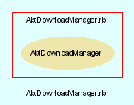

|  |
Package.rb
Package class provides an interface to package creation within AbTLinux. By inheriting from this class (class Fortune < Package) one picks up all supported standard functions for the abt package manager to make use of the new package.
Created by Eric D. Schabell <erics@abtlinux.org> Copyright 2006, GPL.
This file is part of AbTLinux.
AbTLinux is free software; you can redistribute it and/or modify it under the terms of the GNU General Public License as published by the Free Software Foundation; either version 2 of the License, or (at your option) any later version.
AbTLinux is distributed in the hope that it will be useful, but WITHOUT ANY WARRANTY; without even the implied warranty of MERCHANTABILITY or FITNESS FOR A PARTICULAR PURPOSE. See the GNU General Public License for more details.
You should have received a copy of the GNU General Public License along with AbTLinux; if not, write to the Free Software Foundation, Inc., 51 Franklin St, Fifth Floor, Boston, MA 02110-1301 USA
| [R] | DESCRIPTION | |
| [R] | INTEGRITY | |
| [R] | LICENSE | |
| [R] | NAME | |
| [R] | SRCDIR | |
| [R] | SRCFILE | |
| [R] | SRCURL | |
| [R] | URL | |
| [R] | VERSION |
Here is where the actual builing of the software starts, for example running ‘make’.
RETURNS: boolean - True if the completes sucessfully, otherwise false.
[ show source ]
# File Package.rb, line 76
76: def build
77: end
Here we manage the ./configure step (or equivalent). We need to give ./configure (or autogen.sh, or whatever) the correct options so files are to be placed later in the right directories, so doc files and man pages are all in the same common location, etc. Don‘t forget too that it’s here where we interact with the user in case there are optionnal dependencies.
RETURNS: boolean - True if the completes sucessfully, otherwise false.
[ show source ]
# File Package.rb, line 68
68: def configure
69: end
Provides all the data needed for this package.
RETURNS: hash - Contains all package attributes (constants).
[ show source ]
# File Package.rb, line 47
47: def details
48: end
All files to be installed are installed here.
RETURNS: boolean - True if the completes sucessfully, otherwise false.
[ show source ]
# File Package.rb, line 93
93: def install
94: end
Last bits of installation. adding the service for automatic start in init.d for example.
RETURNS: boolean - True if the completes sucessfully, otherwise false.
[ show source ]
# File Package.rb, line 101
101: def post
102: end
Preliminary work will happen here such as downloading the tarball, unpacking it, downloading and applying patches.
RETURNS: boolean - True if completes sucessfully, otherwise false.
[ show source ]
# File Package.rb, line 56
56: def pre
57: end
Any actions needed before the installation can occur will happen here, such as creating new user accounts, dealing with existing configuration files, etc.
RETURNS: boolean - True if the completes sucessfully, otherwise false.
[ show source ]
# File Package.rb, line 85
85: def preinstall
86: end